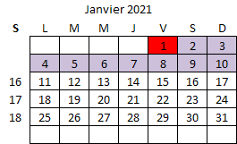
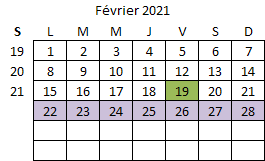

Dates à retenir
Parcoursup : S'inscrire et ajouter ses vœux | Du 20 janvier au 11 mars inclus (Attention au décallage horaire).
Épreuves terminales de spécialité : du 15 au 17 mars 2021 !
Voir le calendrier
Coordonnées d'un vecteur
Tracer une courbe dans python
Effectuer une régression linéaire (équation d'une droite)
Les incertitudes de type A
Chapitres
- C01. Mesure du pH et variation du pH
- C02. Description d'un mouvement
- C03. Analyse physique d'un système chimique
- C04. Mouvement dans un champ uniforme
- C05. Méthodes de suivi d'un titrage
- C06. Mouvement dans un champ gravitationnel
- C07. Évolution temporelle d'une transformation
- C08. Propagation des ondes
- C09. Évolution spontanée d'un système chimique
- C10. Interférences et diffraction
- C11. Équilibre acide-base
- C12. Lunette astronomique
- C13. Structure et optimisation en chimie organique
- C14. Évolution temporelles dans un circuit capacitif
- C15. Stratégie de synthèse
- C16. Étude d'un système thermodynamique
- C17. Bilan d'énergie thermique
Fiches
- F01. Résolution d'un problème scientifique et rédaction d’une réponse argumentée
- F02. Utiliser un oscilloscope
- F03. Tracer une courbe en python
- F04. Réaliser une régression linéaire en python
- F05. Lire des données provenant du port série en python
- F06. Envoyer des données sur le port série à partir d'une carte micro:bit
- F07. Utiliser un tableur, tracer un graphique et obtenir l'équation de la courbe
Période en cours
Aujourd'hui

